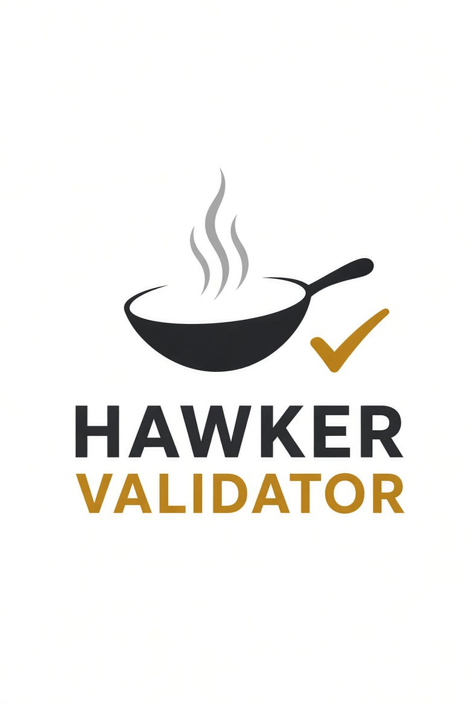

Independent validator operator running nodes across multiple networks. Built by a traditional trader from Singapore. Reliable infrastructure. Direct accountability.
Delegate with Us Learn MoreHawker Validator is an independent validator. We operate validators on several networks. We come from a traditional trader background in Singapore — focused on reliability, long-term thinking, and doing the work ourselves.
Not part of large institutional pools or venture-backed operators. We run our own infrastructure and answer directly for performance.
We run validators across multiple chains. Same operational standards applied consistently wherever we participate.
Infrastructure, monitoring, and uptime are managed in-house. No outsourcing of core validation responsibilities.
We operate validators on selected networks where we can maintain high standards of reliability and contribution.
We currently run validators on multiple proof-of-stake networks. Details of specific chains and performance are available upon request or via our public endpoints.
Every network is operated with the same approach: proper hardware, monitoring, timely upgrades, and transparent communication.
We add networks selectively. Priority is given to chains where independent operators can still contribute meaningfully.
Uptime and performance are treated as non-negotiable. Built from a trader’s discipline of showing up every day.
Delegation supports an independent operator rather than concentrating stake in a few large entities.
Questions and issues are handled directly. No layers of support tickets or account managers.
Interested in delegating, checking our current networks, or discussing infrastructure? Reach out directly.
Contact UsEmail: hello@hawkervalidator.sg